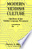
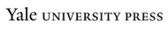

Web
Images
Videos
Maps
News
Shopping
Gmail
more
Translate
Books
Finance
Scholar
Blogs
Realtime
YouTube
Calendar
Photos
Documents
Reader
Sites
Groups
even more »
Account Options
Sign in
My library
Help
Advanced Book Search
History of the Yiddish language
By Max Weinreich
0 Reviews
Write review
About this book
Add to My Library
▼
Get this book
Yale University Press
Amazon.com
Barnes&Noble.com
Books-A-Million
Find in a library
All sellers »
Related books

All related books »

Pages displayed by permission of
Yale University Press
.
Copyright
.
Page 719